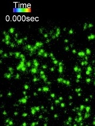

Dr. Xue Pan
Principal Investigator · Assistant Professor
Research interests: plasma membrane organization, lipid metabolism, protein lipidation and plant responses to environmental change.

Principal Investigator · Assistant Professor
Research interests: plasma membrane organization, lipid metabolism, protein lipidation and plant responses to environmental change.

PhD Candidate
Molecular mechanisms regulating temperature- and shade-induced elongation growth in Arabidopsis and Camelina.

PhD Candidate
Deciphering how protein palmitoylation modulates plasma membrane nanodomains in Arabidopsis.

MSc Candidate
Biochemical characterization of protein palmitoylation in auxin signaling.
MSc Candidate
Mapping the shade-avoidance signaling network in Arabidopsis and Camelina using TurboID.
BSc Student · BIOD98
BSc Student · BIOD98
BSc Student · BIOD98
BSc Student · BIOB98

MSc · 2026

Lab Technician · 2023
Please contact us if a profile needs an update. Personal profile links are displayed only when provided and verified.